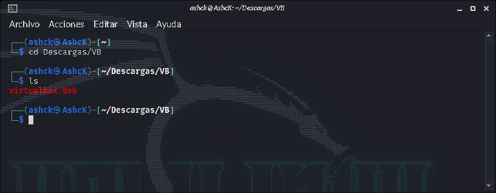
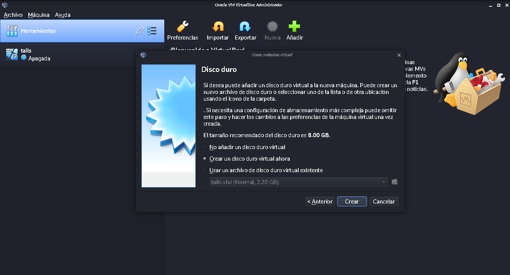
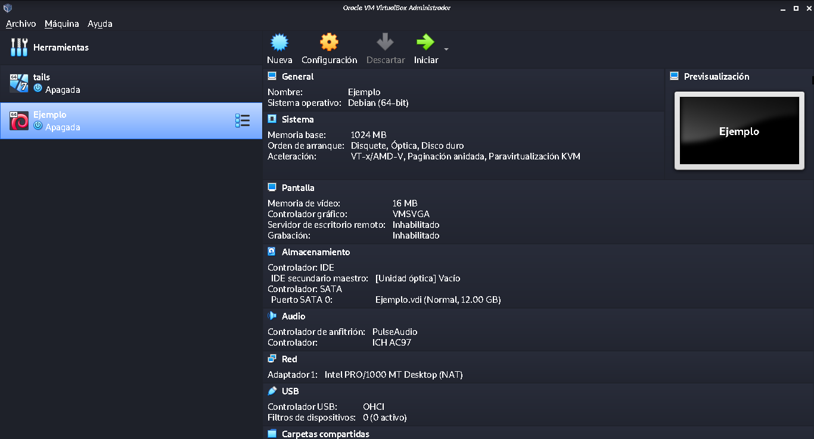

Una máquina virtual es una representación virtual o emulación de un sistema físico. A menudo se les referencia como "invitado" mientras la máquina física en la que se ejecutan se conoce como el "host".
La virtualización permite crear varias máquinas virtuales, cada una con su propio sistema operativo (SO) y aplicaciones, en una única máquina física. Una máquina virtual no puede interactuar directamente con un sistema físico. En su lugar, necesita una capa de software ligera, llamada hipervisor para coordinar entre ella y el hardware físico subyacente. El hipervisor asigna recursos de computación físico, como procesadores, memoria y almacenamiento, a cada máquina virtual. Mantiene cada máquina virtual separada de las otras para que no interfieran entre sí.
Aunque esta tecnología puede ser conocida con muchos nombres, incluido servidor virtual, instancia de servidor virtual (VSI) y servidor privado virtual (VPS), este artículo simplemente se referirá a ellas como máquinas virtuales.
Las instrucciones siguientes mostrarán cómo crear una máquina virtual en un host con el sistema operativo Kalo Linux Rolling utilizando la herramienta VirtualBox:
1.- Decargar el paquete de la pagina oficial https://www.virtualbox.org/wiki/Linux_DownloadsEn este caso Kali esta basado en debian, por lo que descargaremos el paquete para debian 10 (la ultima version estable)
2.- Una vez descargado en una terminal accedemos a la carpeta donde guardamos el paquete Con esto ya tebemos la aplicacion instalada, ahora la ejecutamos (se crea un lanzador en el menu)
4.- Añadir la máquina virtualSeleccionamos el boton azul (nueva)
En esta pantalla llenamos los datos basicos de la maquina, al terminar seleccionamos siguiente
En este caso le asignare solo 1GB, al terminar seleccionamos siguiente
En esta pantalla tenemos que crear un disco duro virtual para ser usada en la maquina, al seleccionar crear
En esta ventana dejamos la configuracion predeterminada y seleccionamos siguiente
En esta ventana seleccionamos el tamaño del disco duro virtual, yo prefiero dejarlo en dinamico, para no tener espacio ocupado en el host y que en la maquina virtual sea libre y no este utilizado, o se puede seleccionar un tamaño fijo
En esta ventana seleccionamos el tamaño maximo que puede tomar este espacio dinamico, al terminar seleccionamos crear
Y listo se ha añadido a la ventana principal, ahora la configuracion
En esta ventana nos pedira el ISO del sistema que querramos ejecutar en la maquina virtual, para buscarlo e los archivos, usamos el boton de la carpeta con una flecha verde, en este caso usare una ISO de una version "antigua" de Kali Linux, y seleccionamos iniciar, con esto Iniciamos una instalacion como la de la actividad #3